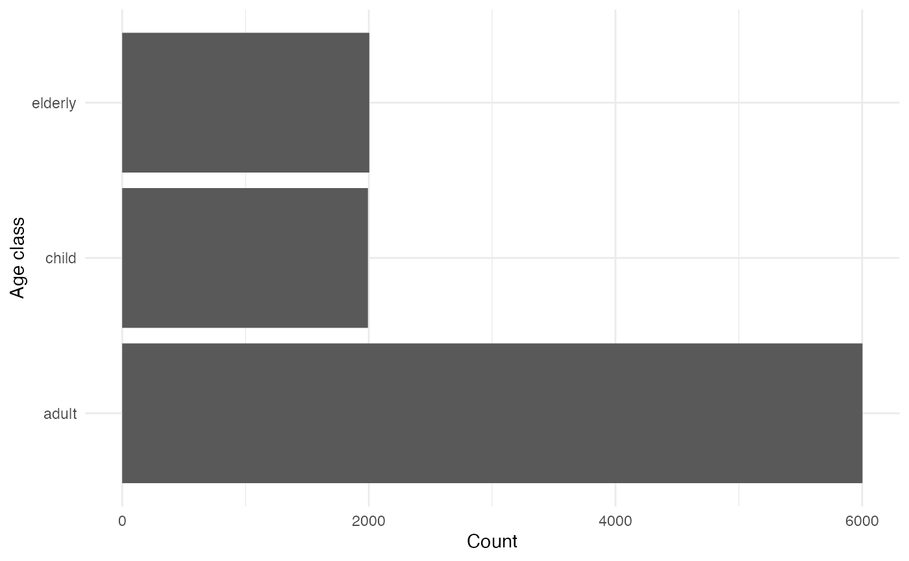
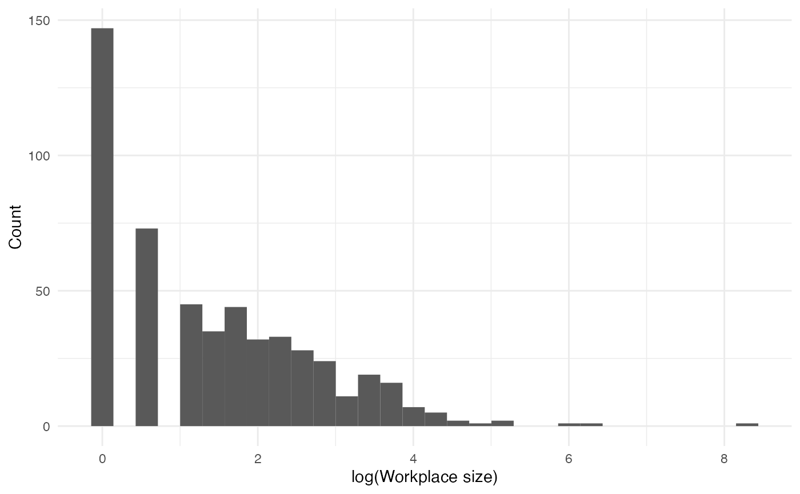
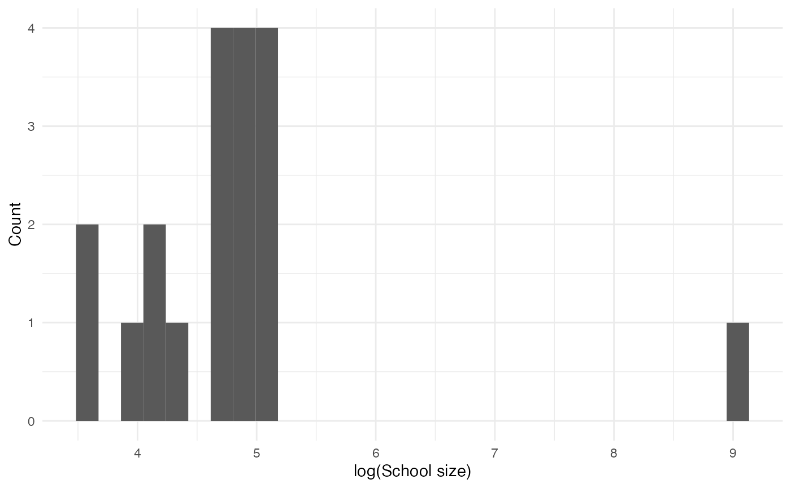
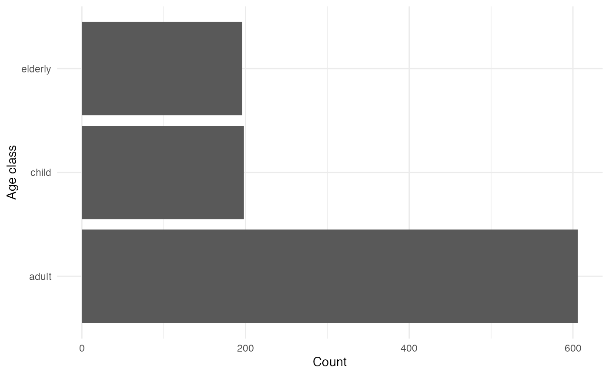
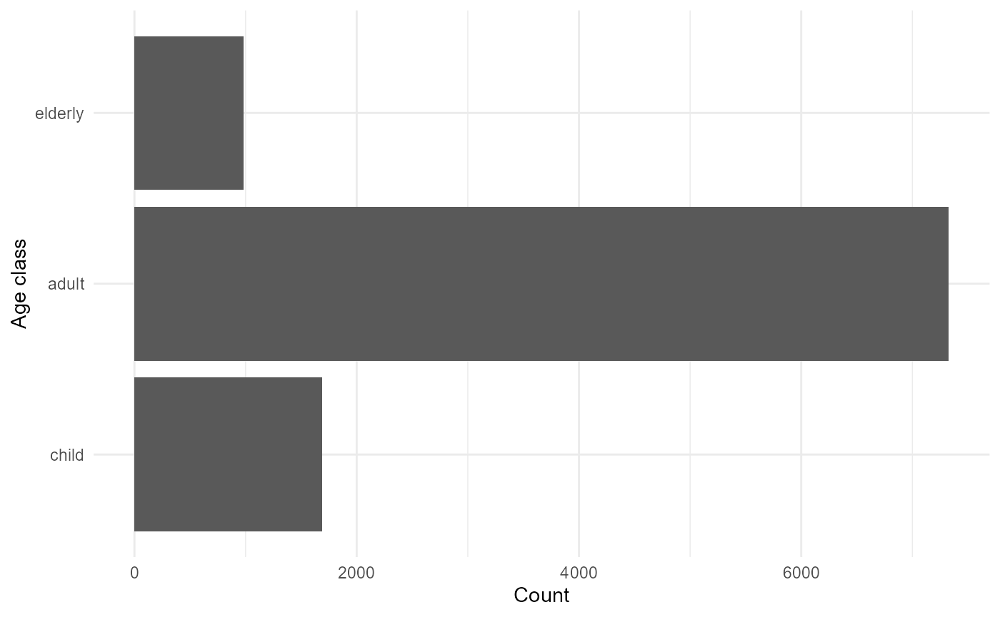

helios is an R package which allows users to simulate
the effect of far UVC
interventions on the spread of infectious disease outbreaks. Outbreaks
are implemented as individual-level SEIR compartmental
models. In this vignette, we demonstrate basic use of the
package.
First, define constant parameters:
parameters_list <- get_parameters()
names(parameters_list)
#> [1] "human_population" "initial_proportion_child"
#> [3] "initial_proportion_adult" "initial_proportion_elderly"
#> [5] "number_initially_exposed" "seed"
#> [7] "mean_household_size" "workplace_prop_max"
#> [9] "workplace_a" "workplace_c"
#> [11] "school_prop_max" "school_meanlog"
#> [13] "school_sdlog" "leisure_prob_visit"
#> [15] "leisure_mean_number_settings" "leisure_mean_size"
#> [17] "leisure_overdispersion_size" "leisure_prop_max"
#> [19] "duration_exposed" "duration_infectious"
#> [21] "beta_household" "beta_workplace"
#> [23] "beta_school" "beta_leisure"
#> [25] "beta_community" "dt"
#> [27] "simulation_time"Next, define model variables:
variables_list <- create_variables(parameters_list)
names(variables_list)
#> [1] "disease_state" "age_class" "workplace" "school"
#> [5] "household" "leisure" "specific_leisure"Mostly CategoricalVariable
class:
class(variables_list$disease_state)
(disease_states <- variables_list$disease_state$get_categories())
#> [1] "S" "E" "I" "R"
disease_state_counts <- purrr::map_vec(disease_states, function(x) variables_list$disease_state$get_size_of(values = x))
data.frame("State" = disease_states, "Count" = disease_state_counts) |>
gt::gt()| State | Count |
|---|---|
| S | 9995 |
| E | 5 |
| I | 0 |
| R | 0 |
(age_classes <- variables_list$age_class$get_categories())
#> [1] "child" "adult" "elderly"
age_class_counts <- purrr::map_vec(age_classes, function(x) variables_list$age_class$get_size_of(values = x))
data.frame(age_classes, age_class_counts) |>
ggplot(aes(x = age_classes, y = age_class_counts)) +
geom_col() +
labs(x = "Age class", y = "Count") +
coord_flip()
workplaces <- variables_list$workplace$get_categories()
workplace_sizes <- purrr::map_vec(workplaces, function(x) variables_list$workplace$get_size_of(values = x))
data.frame(workplace_sizes) |>
ggplot(aes(x = log(workplace_sizes))) +
geom_histogram() +
labs(x = "log(Workplace size)", y = "Count")
#> `stat_bin()` using `bins = 30`. Pick better value with `binwidth`.
schools <- variables_list$school$get_categories()
school_sizes <- purrr::map_vec(schools, function(x) variables_list$school$get_size_of(values = x))
data.frame(school_sizes) |>
ggplot(aes(x = log(school_sizes))) +
geom_histogram() +
labs(x = "log(School size)", y = "Count")
#> `stat_bin()` using `bins = 30`. Pick better value with `binwidth`.
households <- variables_list$household$get_categories()
household_sizes <- purrr::map_vec(households, function(x) variables_list$household$get_size_of(values = x))
table(household_sizes) |>
data.frame() |>
ggplot(aes(x = household_sizes, y = Freq)) +
geom_col() +
labs(x = "Household size", y = "Count")
leisure_places <- variables_list$leisure$get_values()
number_leisure_places <- sapply(leisure_places, function(x) sum(x > 0))
table(number_leisure_places) |>
data.frame() |>
ggplot(aes(x = number_leisure_places, y = Freq)) +
geom_col() +
labs(x = "Number of leisure places attended in a week", y = "Count")
events_list <- create_events(variables_list = variables_list, parameters_list = parameters_list)